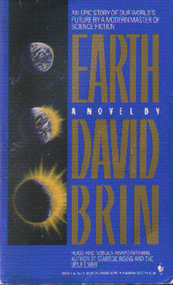

Earthby David Brin
publisher: Spectra
Fiction, 678 pages | 
(book cover art, Copyright ©1991 Dennis Davidson)
Used with Permission. |
Return to the Book MenuPrevious|Next
Description:
In a near future earth, a young scientist struggles to find and eliminate a miniature black hole that accidentally dropped into the center of the earth. When he searches for it, however, he finds a source of incredible power - but he is not the only one.
Recommended for: fiction readers who don't want to go out into space. People interested in a glimpse of a possible near-future society, and those who are concerned about Man's impact on the earth as a whole.
Did-you-read questions:
Deadline: February 1, 2005.
These should be easy questions, but you should have the questions ready and keep an eye out during your reading. Each question should be answered with 1-2 sentences.
Note: these questions are not probably not the most important part of the book! Your essay will not have to cover these questions!
- Who or what made and dropped Alpha?
- What is a Tru-Vu, and what sort of person usually has a set?
- What is Claire's relationship to the master computer hacker who lives in the Mississippi delta?
- Where did Beta come from and when did it arrive at earth?
- What becomes of Alex's grandmother, Jen?
Report Questions:Deadline: Peer Review Session on February 8, 2005; paper due February 10, 2005.
You should write a 3 - 4 page essay on one of the following questions. Your essay should include examples and references to the book, unless otherwise specified. Page number references are sufficient for citing material from the primary book. If you use outside materials, cite your sources in full. If you would rather write on a different topic, you may, but clear it with Mr. Howe or Ms. Sullivan first.
- Aside from the physics of earth's interior, the author makes some very interesting predictions about the state of human affairs. For example the attitudes and occupations of the young and old, the environment, religion, global politics, and generally the way people deal with one another. Do these predictions ring true for you? What seems most realistic to you? Which of these predictions do you find most unlikely?
- Something enormous and wonderful arises at the end of the book, but we may never know the minds of those who originated this transformation, since it started over a hundred years ago in a remote place. Do you think this type of change was intentional or was it the fortunate and coincidental result of a malevolent start?
- "In the battle at the end of the book, the Earth is at the center of everything." Discuss this statement and the ways in which it may be interpreted.
- What do you think life would be like for mankind after the events depicted in this novel? Make some predictions of your own, based on the book, for what happens next.
Graphic and Presentation:
Deadline: February 21 - March 3, 2005.You will give a 10 minute presentation on both of the following:
- Convince your peers that they should (or should not) read this book. (This may include a brief summary of the book.) Give examples of what was cool or worthwhile in the book, and what you got out of it (or didn't).
- Describe a (realistic) science idea that you learned about in this book, citing information from at least 2 external sources (other than the dictionary). If you would like help choosing or understanding an idea from your book, you are invited to come talk to Mr. Howe or Ms. Sullivan.
Note: This presentation should not be just a reading of your paper!Along with this presentation, you should have a graphic that will go with it. A Power Point presentation is recommended, but if you have a special idea for a something else, such as a model, an original video presentation, or a well done drawing/ painting/ sculpture/ etc., you may do so, provided it involves a similar level of effort and polish. Speak to Mr. Howe or Ms. Sullivan first if you are considering an alternate graphic format to the Power Point.
Return to the Book MenuPrevious|Next